Accessing AWS Event Engine
In this guide we will help you get started by accessing AWS Event Engine, the AWS CloudShell as well as Cloud9. Let us start by pasting the URL of the event in a browser tab. Use an incognito browser to ensure that you are not using credentials from your own AWS account. Chrome and Firefox browsers are preferred.
You will be required to login using an OTP. Choose this option to continue.
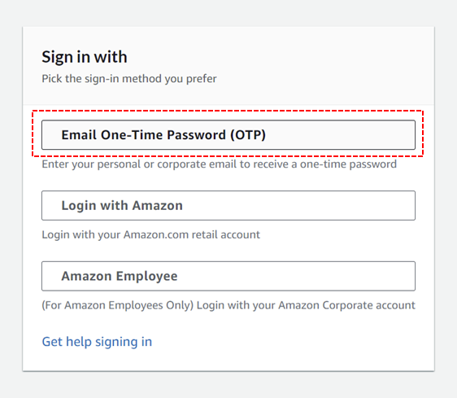Next you must specify your email. It has to be a valid email address that you can access, and it MUST be the email address that you specified to the event administrator, prior to the event. Click 'Send passcode'.
You should receive a passcode from AWS Training in your mailbox shortly. Copy the passcode.
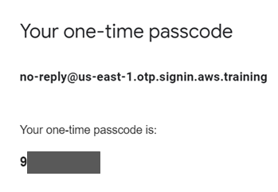Now go back to the browser tab with the OTP dialog. Paste in the passcode and click 'Sign in'.
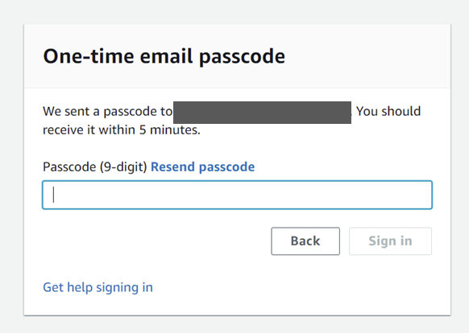Wait for the sign in process to complete.
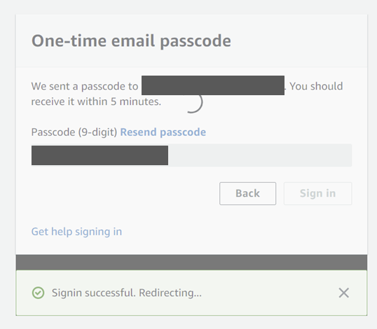Accessing the AWS Console
Click the 'Open AWS Console' link.
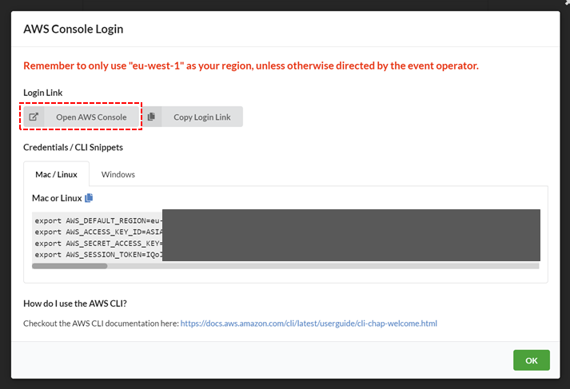Click the 'Switch to new Console Home' button.
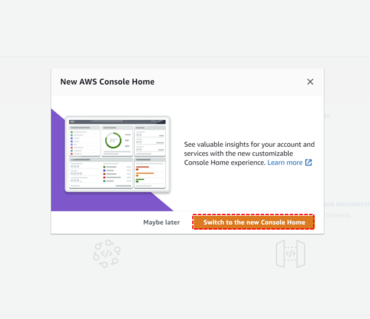Access AWS CloudShell
Start a CloudShell session by clicking the small shell icon at the top, or by using this link.
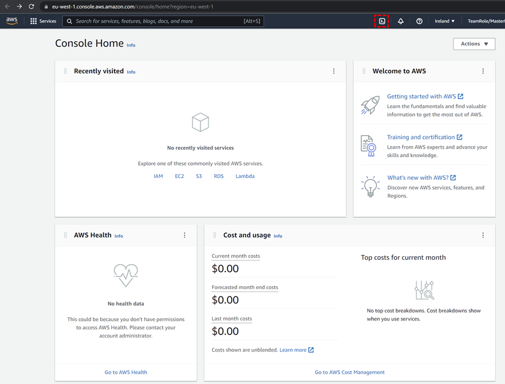Close the CloudShell welcome screen.
Wait for the CloudShell to initialize.
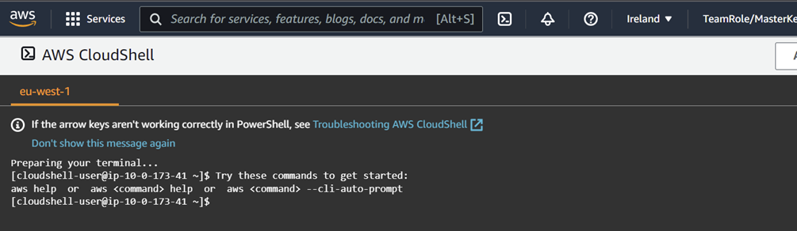Install lab resources
Now we will install the lab resources we need to provision basic network configuration as well as the Cloud9 online IDE. Let us start by cloning the resources from the git repository containing the lab resources.
cd git
git clone https://github.com/sundgaard-aws/aws-glue.git
yum install typescript
sudo npm install -g aws-cdk@latest
As we will be using the CDK for deploying the basic VPC and networks, we need to first bootstrap the CDK envrionment. Wait for the bootstrapping to complete.
cdk bootstrap
Track deployment progress using CloudFormation
To view the progress of what is being depoyed, we will be using AWS CloudFormation. Open CloudFormation in a new tab by searching for it in the 'Services' search field. Right click the 'CloudFormation' icon an choose 'Open in new tab'.
Verify that the status is CREATE_COMPLETE for the CDKToolkit stack.

Deploying the networking stack
We will now deploy the basic network components using the CDK. We can do this by specifying just the name of the network stack using wildcards, as per the code below.
Accept to deploy the changes by typing 'y' and pressing 'Enter'. Verify that the status of the network stack in the CloudFormation Console is CREATE_IN_PROGRESS or CREATE_COMPLETE.
Wait for the CDK to show a green checkmark for the network stack in the console.
Verify that the network stack indeed is created in the CloudFormation Console.
Create a Cloud9 environment
We will now be provisioning a Cloud9 online IDE environment, which will be used for most labs. Navigate to Cloud9 Console. Start by giving the environment the name 'acc-day-cloud9-env'. Use the same for the description field or leave it empty. Click 'Next Step'.
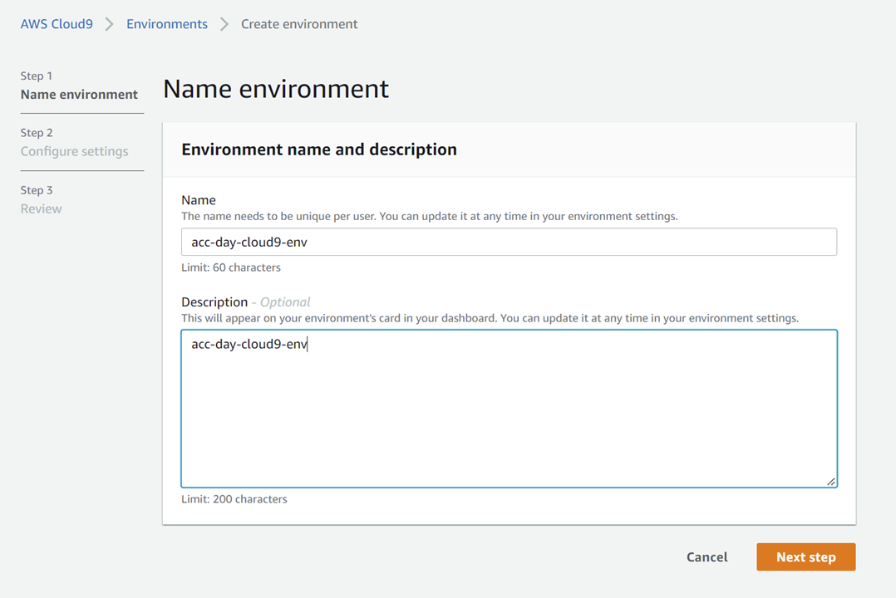On the 'Configure settings' tab choose the option 'Create a new no-ingress EC2...'. This is very important as your Cloud9 environment will otherwise fail to provision correctly. This is because we are running the Cloud9 IDE in a private subnet, as you will see shortly.
For instance type choose 'Other instance type' and select 't3.micro'.
Now configure the network. Choose the VPC named 'acc-day-glue-vpc' and the subnet 'acc-day-glue-private-sne'. Note that it HAS to be the PRIVATE subnet NOT the PUBLIC one. Click 'Next Step'.
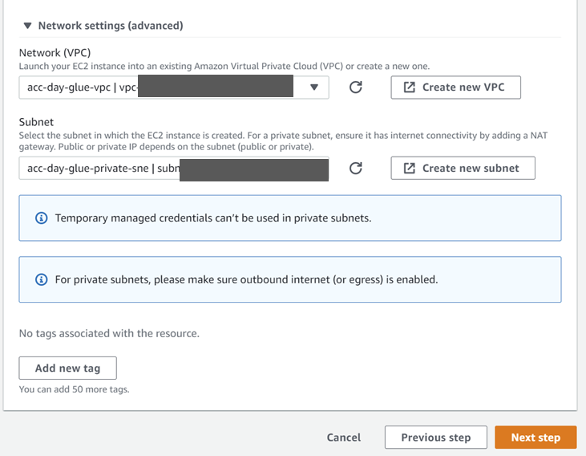Verify the settings and if correct choose 'Create environment' and otherwise go back and correct it using the 'Previous step' button.
Configuring the Cloud9 IDE
A Cloud9 windows should automatically appear at this point, and after a while it will display a 'Welcome' screen.
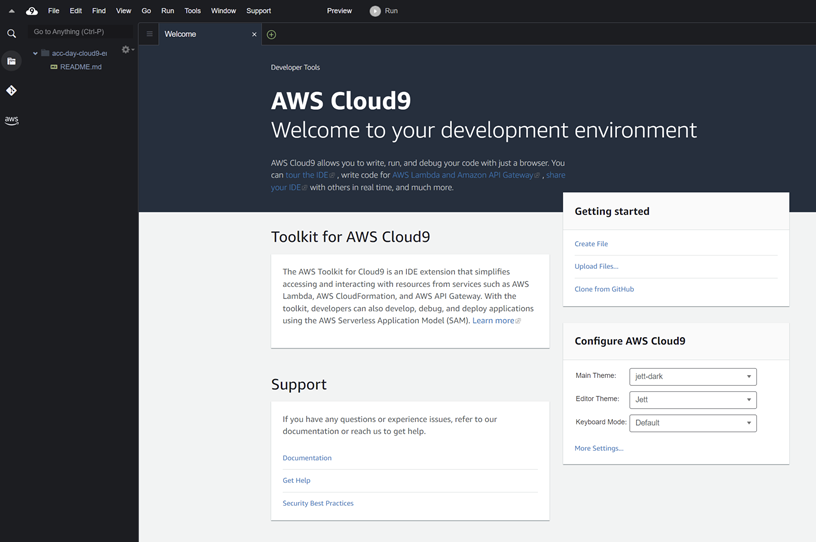To ensure that we are using the right IAM Role and credentials we will disable the managed credentials settings in Cloud9. Click the cogwheel in the top right corner. Navigate to 'AWS Settings' and click the 'AWS managed temporary credentials' to disable it. It should be showing as red with a white cross.
You can now close the 'Preferences' tab. Next drag the bottom divider to make the lower terminal screen section a bit heigher. Run the command below and verify that the output shows that you are using a role that contains the text 'TeamRole'.
We will now clone some of the lab resources. We did this as well in the CloudShell, but remember that this time we are using Cloud9, which has some more advanced features. Run the code below.
cd git
git clone https://github.com/sundgaard-aws/aws-glue.git
Finally we will verify that the CDK is working by running a simple CDK command.
cdk diff *network*
Congratulations! You are now ready for the labs.